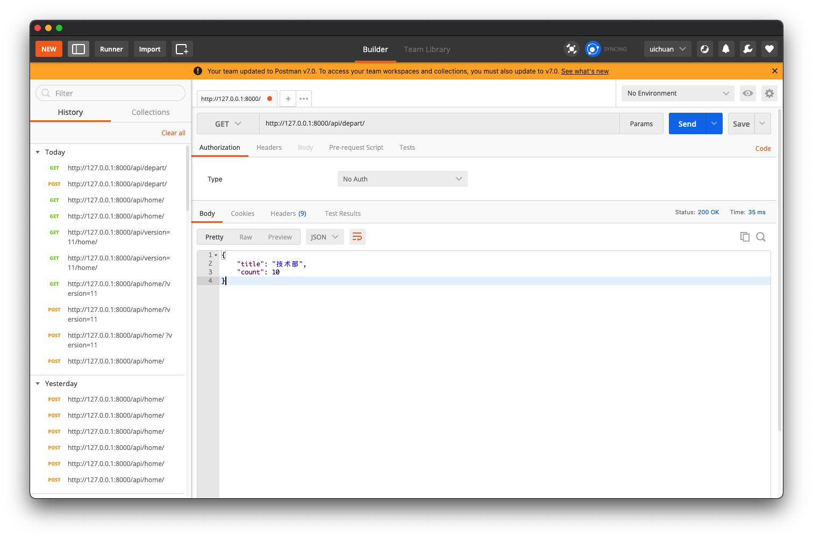
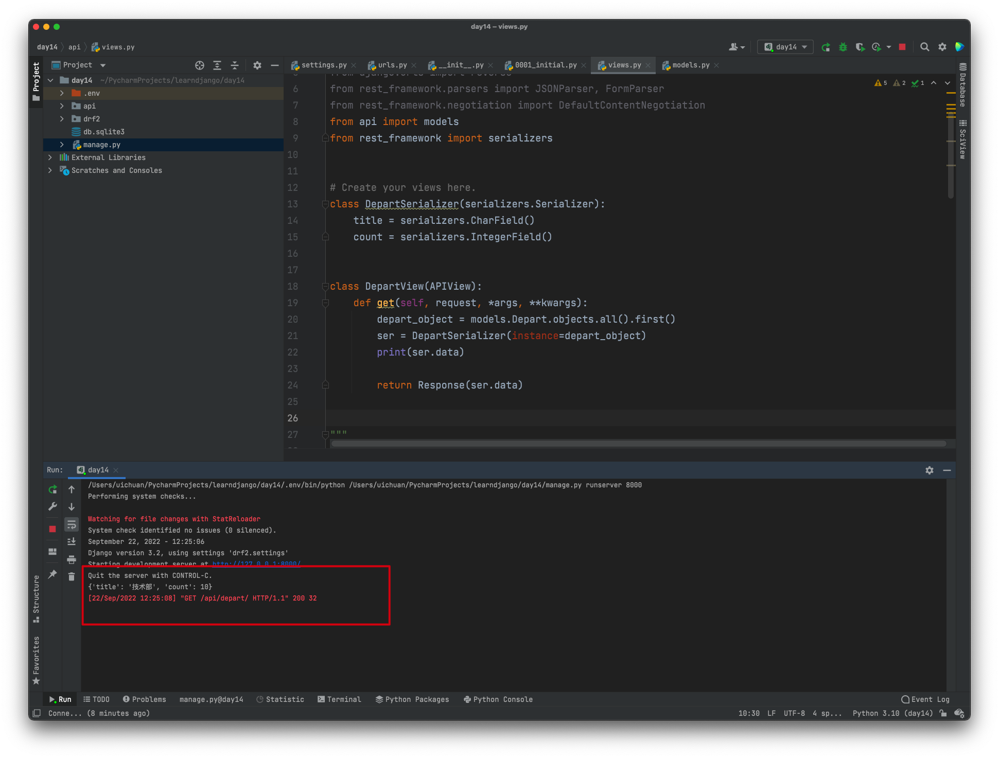
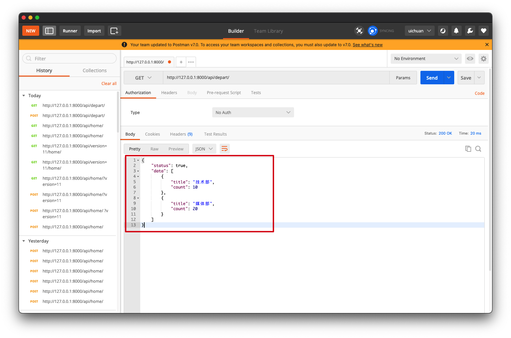
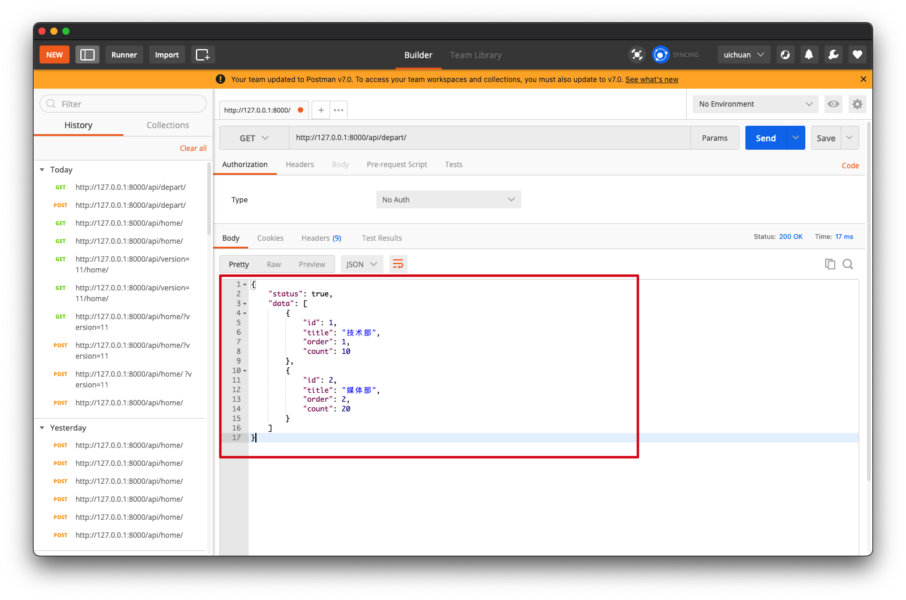

7.restframework序列化
序列化器有两个功能
- 数据校验
- 序列化
1.序列化器的简单实用
序列化器将django通过orm操作从数据库中取得的数据做序列化操作转换为Json数据
需要编写序列化类
from api import models
from rest_framework import serializers
class DepartSerializer(serializers.Serializer):
title = serializers.CharField()
count = serializers.IntegerField()
并且在视图函数中应用，实例化DepartSerializer对象并且传入通过ORM查询得到的对象QueryDict
class DepartView(APIView):
def get(self, request, *args, **kwargs):
depart_object = models.Depart.objects.all().first()
ser = DepartSerializer(instance=depart_object)
print(ser.data)
return Response(ser.data)
在postman中测试

序列化器成功得到数据，并且返回给接口Json数据

注意⚠️：
- 在序列化器类中的字段名应该与ORM中的字段名保持一致
- 同时数据类型
field也要保持一致
2. 对多个对象的序列化
视图函数中的序列化器的对象在生成时需要添加一个参数many=True
此时，models接收的对象应该是多个，放在一个列表中
[obj1,obj2,obj3,....]
用单个对象接收就不太合适了，这里用queryset来接收
# queryset = [obj1,obj2,obj3,....]
queryset = models.Depart.objects.all()
from rest_framework.views import APIView
from rest_framework.response import Response
from api import models
from rest_framework import serializers
class DepartSerializer(serializers.Serializer):
title = serializers.CharField()
count = serializers.IntegerField()
class DepartView(APIView):
def get(self, request, *args, **kwargs):
queryset = models.Depart.objects.all()
ser = DepartSerializer(instance=queryset, many=True)
print(ser.data)
context = {"status": True, "data": ser.data}
return Response(context)
Postman中的测试结果：

3.ModelSerializer
class DepartSerializer(serializers.ModelSerializer):
class Meta:
model = models.Depart
fields = "__all__"
更加轻松的方式，类似ModelForm的原理
在postman中的测试结果：
所有数据字段都可以被序列化

4.source & 时间格式化
class UserSerializer(serializers.ModelSerializer):
xx = serializers.CharField(source='get_gender_display')
depart = serializers.CharField(source='depart.title')
ctime = serializers.DateTimeField(format="%Y-%m-%d")
class Meta:
model = models.UserInfo
# fields = "__all__"
fields = ['name', 'age', 'xx', 'depart', 'ctime']
source去数据库中寻找到对应字段，new_name作为返回的Json中的数据的键名
class UserView(APIView):
def get(self, request, *args, **kwargs):
models.UserInfo.objects.all().update(ctime=datetime.datetime.now())
queryset = models.UserInfo.objects.all()
ser = UserSerializer(instance=queryset, many=True)
context = {"status": True, "data": ser.data}
return Response(context)
在postman中的测试结果：

5. 序列化自定义方法
在serializers字段中自定义SerializerMethodField()
并且定义函数（类似与钩子）
def get_xxx(self, obj):
return '这里是自定义方法'
class UserSerializer(serializers.ModelSerializer):
xx = serializers.CharField(source='get_gender_display')
depart = serializers.CharField(source='depart.title')
ctime = serializers.DateTimeField(format="%Y-%m-%d")
xxx = serializers.SerializerMethodField()
class Meta:
model = models.UserInfo
# fields = "__all__"
fields = ['name', 'age', 'xx', 'depart', 'ctime', 'xxx']
def get_xxx(self, obj):
return '这里是自定义方法'

6.序列化类嵌套
主要是ORM类中对应的ForeignKey和ManagToManyField字段进行序列化
- 基于
SerializerMethodField自定义方法对关联数据进行序列化 - 基于嵌套类的序列化
from django.db import models
class Role(models.Model):
title = models.CharField(verbose_name="标题", max_length=32)
order = models.IntegerField(verbose_name="顺序")
class Tag(models.Model):
caption = models.CharField(verbose_name="名称", max_length=32)
class UserInfo(models.Model):
name = models.CharField(verbose_name="姓名", max_length=32)
gender = models.SmallIntegerField(verbose_name="性别", choices=((1, "男"), (2, "女")))
role = models.ForeignKey(verbose_name="角色", to="Role", on_delete=models.CASCADE)
ctime = models.DateTimeField(verbose_name="创建时间", auto_now_add=True)
tags = models.ManyToManyField(verbose_name="标签", to="Tag")
from rest_framework.views import APIView
from rest_framework.response import Response
from rest_framework import serializers
from api import models
class RoleSerializer(serializers.ModelSerializer):
class Meta:
model = models.Role
# fields = "__all__"
fields = ["id", 'title']
class TagSerializer(serializers.ModelSerializer):
class Meta:
model = models.Tag
fields = "__all__"
class InfoSerializer(serializers.ModelSerializer):
role = RoleSerializer()
tags = TagSerializer(many=True)
class Meta:
model = models.UserInfo
fields = ['id', 'name', "role", "tags"]
class InfoView(APIView):
def get(self, request):
queryset = models.UserInfo.objects.all()
ser = InfoSerializer(instance=queryset, many=True)
print(type(ser.data), ser.data)
return Response(ser.data)
7.序列化类继承
from rest_framework.views import APIView
from rest_framework.response import Response
from rest_framework import serializers
from api import models
class MySerializer(serializers.Serializer):
more = serializers.SerializerMethodField()
def get_more(self, obj):
return "123"
class InfoSerializer(serializers.ModelSerializer, MySerializer):
class Meta:
model = models.UserInfo
fields = ["id", "name", 'more']
class InfoView(APIView):
def get(self, request):
instance = models.UserInfo.objects.all().first()
ser = InfoSerializer(instance=instance, many=False)
print(type(ser.data), ser.data)
return Response(ser.data)